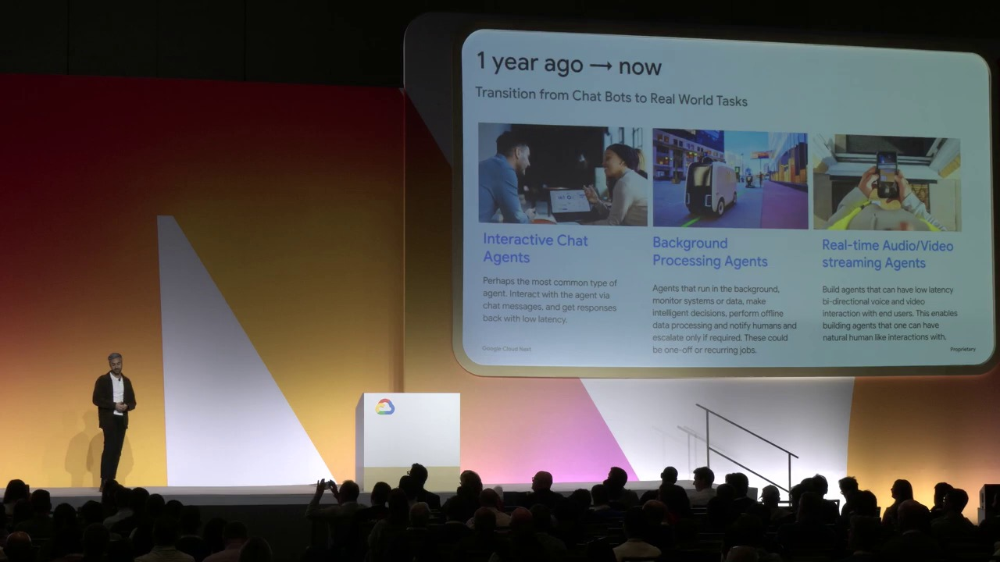
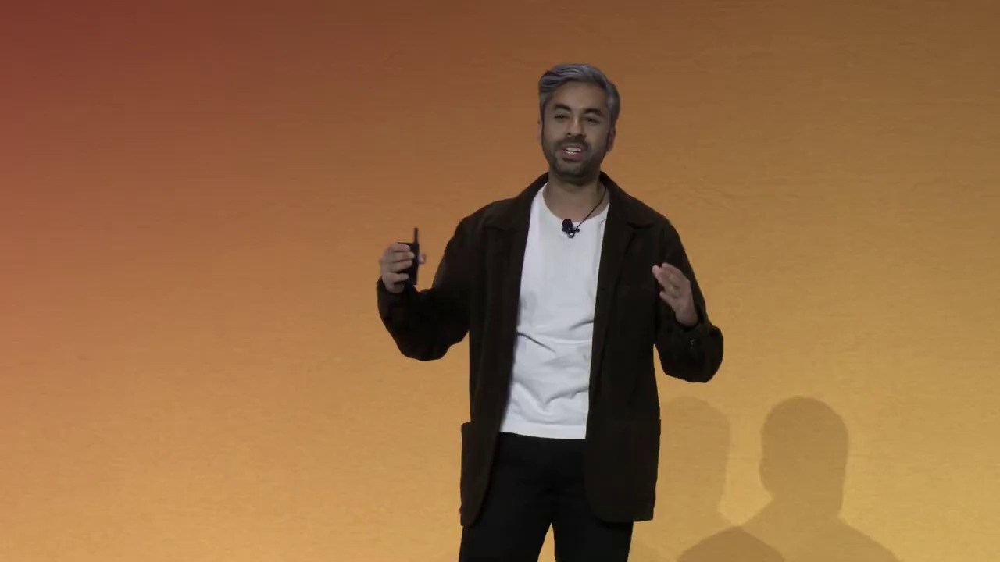
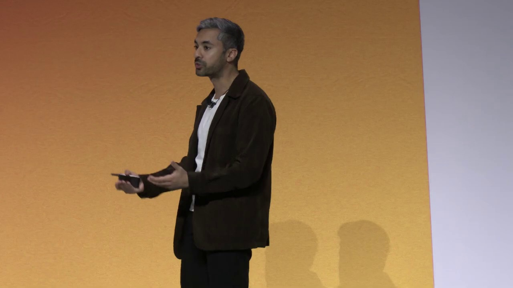
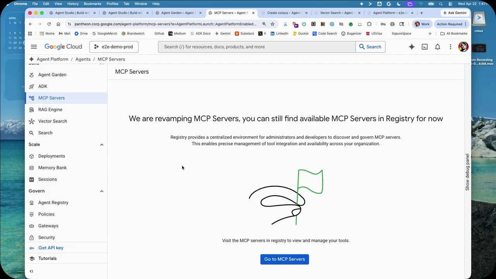
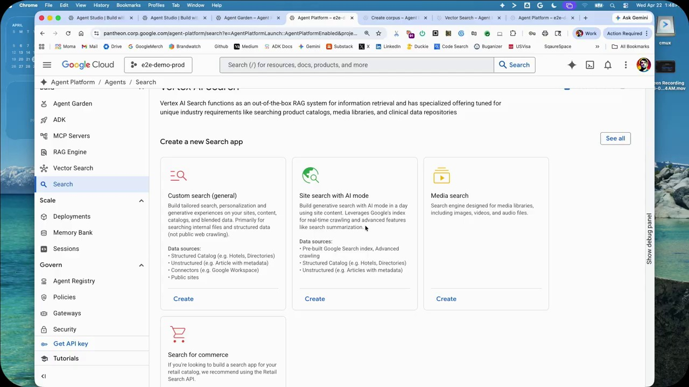
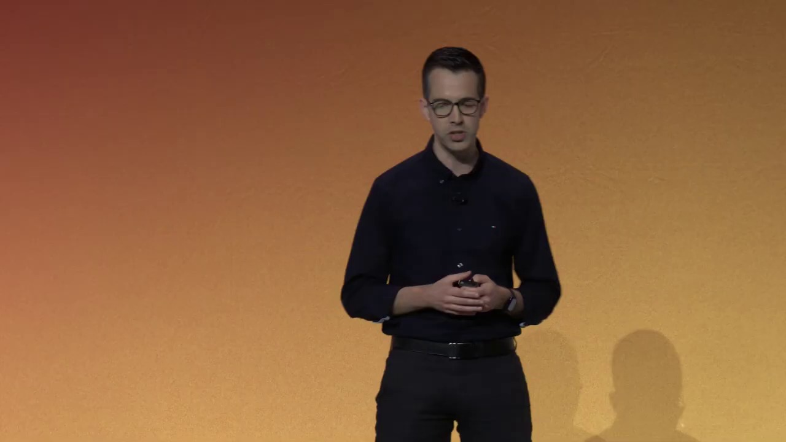
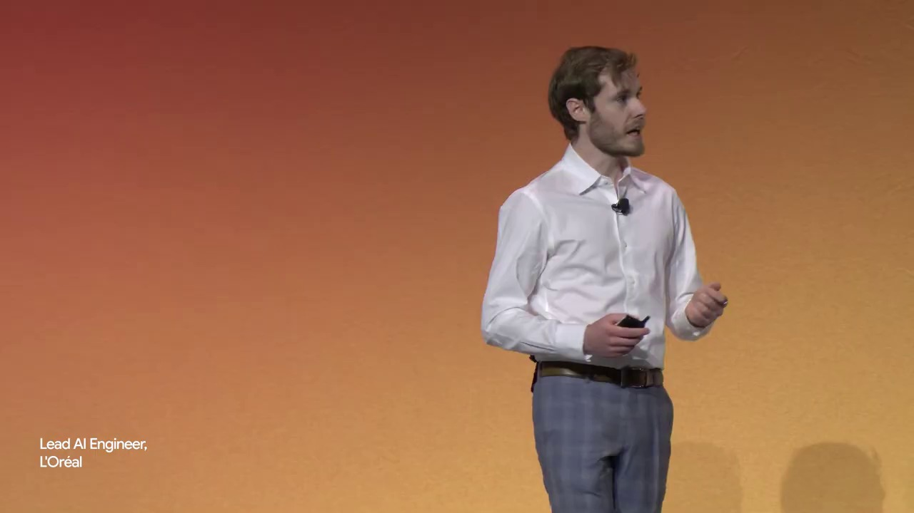
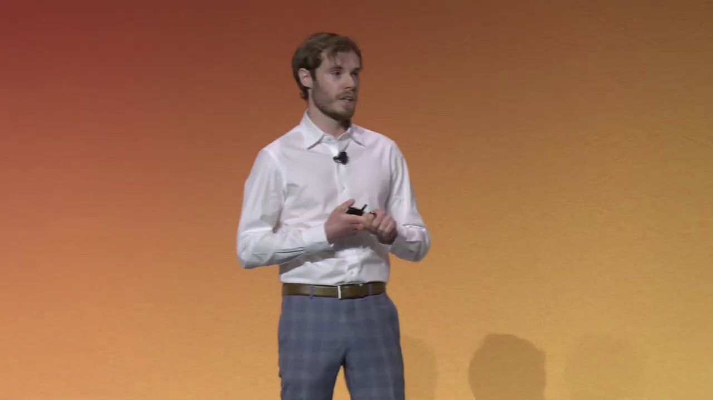
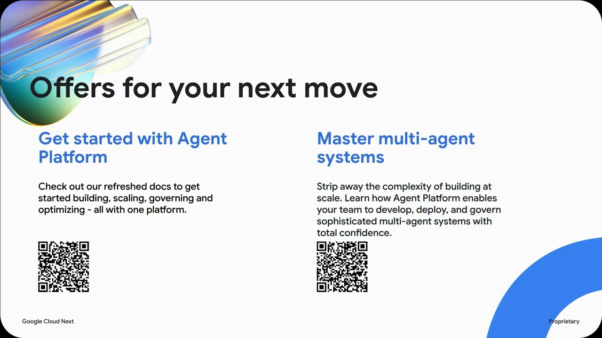

Key Moments










Summary & Script
What's new in Google Cloud's agent platform
Source: https://www.youtube.com/watch?v=FxnjRYo3fpU
Video ID: FxnjRYo3fpU
Overview
The session gives an update on Google Cloud’s Agent Platform, showing how it has evolved from the initial ADK and Agent Engine demos to a full‑stack, production‑ready solution. Aman Khan (Product Manager) and Lavi (DevRel) walk through new capabilities—governance, deployment, orchestration, memory, sandboxes, and optimization—while highlighting early adopters such as L’Oréal and Gautier. The goal is to demonstrate that agents are no longer experimental chatbots but enterprise‑grade “race‑car” AI services that can be built, scaled, and trusted end‑to‑end on Google Cloud.
New Features & Announcements
- Graph‑based orchestration – Model real business processes with branches, loops and conditionals.
- Agent collaboration – Decompose large problems across specialized agents instead of a monolith.
- Batch & event‑driven workflows – Agents can react to system events in real time.
- Native skill definitions – Define a skill once and reuse it across all ADK agents.
- Agent CLI & built‑in skills – One‑stop command‑line tool for scaffolding, evaluation, deployment and observability.
- Sub‑second cold‑start runtime & BYOC containers – Faster serving and full flexibility for custom environments.
- Long‑running single‑plan agents – Agents can run autonomously for up to 7 days without human input.
- Bidirectional streaming – Low‑latency, real‑time interaction support.
- Session service & memory bank – Persistent, framework‑agnostic memory for agents to retain context across sessions.
- Code‑execution sandboxes & GUI interaction sandbox – Securely run code and control GUIs from agents.
- Agent Identity (GA) – Granular, auditable permission management for agents.
- Agent Registry – Auto‑listing of all deployed agents with their tool/service access.
- Model armor & proactive threat management – Real‑time protection against prompt injection and data leaks.
- Agent Gateway – Central control plane for securing and governing agent traffic.
- DeepMind‑backed evaluation suite – Online/offline evals, continuous monitoring and optimization without needing internal research teams.
Topics Covered
- Historical context – Recap of ADK, Agent Engine, and the shift from chatbots to full‑blown agents.
- Strategic analogy – Traditional software = reliable Toyota Camry; agents = Formula 1 race car needing guardrails.
- End‑to‑end stack view – Gemini Enterprise (front‑end) → Agent Platform (runtime, registry, gateway, observability) → Google Cloud AI foundation (hyper‑computer, Agentic Data Cloud, Agent Defense).
- Core platform pillars – Building, scaling, governing, and optimizing agents.
- Building layer – ADK enhancements: graph orchestration, collaboration, batch/event workflows, reusable skill definitions, new Agent CLI.
- Scaling layer – Runtime improvements: sub‑second cold starts, BYOC, long‑running agents, streaming, persistent memory, sandboxes for code and GUI interaction.
- Governance layer – Integrated identity, registry, model armor, threat management, and Agent Gateway as a unified control plane.
- Optimization layer – DeepMind‑derived evaluation tools for continuous performance monitoring and improvement.
- Customer examples – Brief mentions of how L’Oréal, Gautier, and Thomas are already using the platform in production.
- Call to action – Invite attendees to try the new CLI, explore the sandbox features, and reach out for deeper technical demos.
Key Takeaways
- The Agent Platform is now a vertically integrated, production‑grade stack that takes agents from prototype to enterprise scale without stitching together multiple vendors.
- Governance is baked in from the start—identity, registry, model armor, and gateway provide end‑to‑end security and compliance.
- New developer tools (Agent CLI, graph orchestration, reusable skills) dramatically lower the barrier to building complex, multi‑agent workflows.
- Scalability improvements (sub‑second cold starts, BYOC, 7‑day autonomous runs) enable agents to serve thousands to millions of users.
- Memory, sandboxes, and streaming give agents persistent context and real‑world execution capabilities, moving them beyond simple Q&A bots.
- Optimization leverages DeepMind research for continuous evaluation, so teams can maintain high performance without building an in‑house research function.
- Early adopters are already seeing production value, illustrating that the platform is ready for mission‑critical use cases.
Notable Quotes
- “Everyone can get in a Toyota Camry and drive it… but with agents, we’re building Formula 1 race cars.”
- “Agents shouldn’t start from scratch with every conversation… now, with sessions and memory bank, agents get persistent memory so that they get smarter over time.”
- “Governance should span from prototype to production… it’s not bolted on as an afterthought.”
- “You get the benefit of DeepMind research… without having an army of researchers inside your own business.”
Podcast Script
JORDAN: Welcome to SlackCasts by PodSlacker — where AI does the watching so you can do the listening. If you want a richer experience with today's episode, visit PodSlacker dot com slash SlackCasts — you'll find a written summary, key frame moments from the video, and an interactive AI chat to explore the topic as deep as you like. Now let's get into it.
MIKE: Aman and Lavi just walked us through the evolution from the ADK demos to what they’re calling a production‑grade Agent Platform. Let’s unpack that shift—why does moving from “chatbot‑only” to “race‑car agents” matter for enterprises?
JORDAN: The analogy is powerful: traditional software is a reliable Camry, while agents are Formula 1 machines. That implies high performance, but also the need for guardrails—governance, safety, observability—because you’re not just answering questions, you’re executing business processes.
MIKE: Governance shows up early in the stack. They announced Agent Identity in GA, a granular IAM model for agents. How does that differ from regular service accounts?
JORDAN: Agent Identity extends Cloud IAM to the agent level, letting you assign role‑based permissions per agent and audit every tool call. It’s baked into the runtime, so an agent can’t arbitrarily invoke a Cloud Function unless its identity is explicitly granted that permission.
MIKE: That ties into the Agent Registry, which auto‑lists every deployed agent and its tool footprints. From a compliance standpoint, that’s a single source of truth for asset inventories.
JORDAN: Exactly. The registry also feeds the new Agent Gateway—a control plane that routes traffic, enforces policies, and can inject custom auth checks. It’s the “central nervous system” for all agent egress and ingress.
MIKE: Let’s shift to the building layer. The ADK now supports graph‑based orchestration. How does that improve over linear prompting?
JORDAN: Instead of a monolithic prompt chain, you can define nodes with branches, loops, and conditionals—essentially a DAG that mirrors a business workflow. Each node can be a specialized skill or a separate agent, enabling true decomposition.
MIKE: Speaking of skills, they introduced native skill definitions reusable across agents. Is that like a function library?
JORDAN: It’s a declarative skill contract—input schema, output schema, and execution semantics—so any ADK‑based agent can import the skill without rewriting logic. Think of it as a shared API for agent capabilities.
MIKE: The Agent CLI sounds like a developer’s Swiss Army knife. What tasks does it cover?
JORDAN: Scaffolding new agents, running local evaluation suites, deploying to the managed runtime, and attaching observability hooks—all via a single command set. It integrates with Cloud Code, Gemini CLI, or can be invoked directly from a terminal.
MIKE: That lowers the barrier to entry, but scaling is the real test. Sub‑second cold starts and BYOC containers were highlighted. How do they achieve sub‑second latency?
JORDAN: The runtime pre‑warms a pool of containers and leverages the Gemini Enterprise hyper‑computer for rapid model loading. BYOC lets you bring a pre‑built container image, so you avoid the generic startup overhead and can fine‑tune the environment for low latency.
MIKE: And the 7‑day single‑plan agents—what use cases justify such long autonomous runs?
JORDAN: Think of a supply‑chain optimizer that continuously rebalances inventory without human prompts, or a compliance monitor that audits logs nightly for a week. The runtime maintains state, enforces policy, and can be killed early if anomalies are detected.
MIKE: Persistent context is another pillar: sessions and the memory bank. How is that different from simple token windows?
JORDAN: The session service persists arbitrary key‑value pairs beyond the model’s context window, and it’s framework‑agnostic. You can store user preferences, last‑action timestamps, or even intermediate computation results, allowing the agent to recall across days.
MIKE: The sandboxes—code execution and GUI interaction—raise security questions. How are they isolated?
JORDAN: They run in gVisor‑based lightweight VMs with strict egress controls. The code sandbox can execute user‑provided scripts in a deterministic, auditable environment, while the GUI sandbox uses a headless Chrome instance that can be throttled or disabled per policy.
MIKE: That brings us to model armor and proactive threat management. Are these runtime‑level defenses or model‑level?
JORDAN: Model armor is a runtime filter that intercepts prompts and responses, detecting injection patterns or data leakage attempts in real time. Proactive threat management adds telemetry—anomaly detection on token distributions—and can auto‑quarantine a misbehaving agent.
MIKE: Finally, the optimization layer leverages DeepMind‑backed evaluation suites. What does that buy us compared to building our own eval pipelines?
JORDAN: DeepMind’s suite provides both online A/B testing and offline regression suites, automatically surfacing drift, latency spikes, or safety regressions. It abstracts the research stack so product teams can focus on feature work, not on building custom eval infra.
MIKE: Early adopters like L’Oréal and Gautier are already in production. What concrete benefits are they seeing?
JORDAN: L’Oréal uses multi‑agent orchestration to personalize product recommendations across channels, reducing latency from seconds to sub‑second and cutting manual curation effort by 40%. Gautier leverages the sandboxed code execution for automated inventory reconciliation, achieving near‑real‑time sync with legacy ERP systems.
MIKE: Summing up, the Agent Platform now offers a vertically integrated stack—build, scale, govern, optimize—so enterprises can move from prototype to mission‑critical deployment without cobbling together disparate tools.
JORDAN: That’s a wrap on today's SlackCast. Head over to PodSlacker dot com slash SlackCasts for the written summary, visual key moments, and an AI chat to dive even deeper into today's topic. Until next time — slack off smarter.